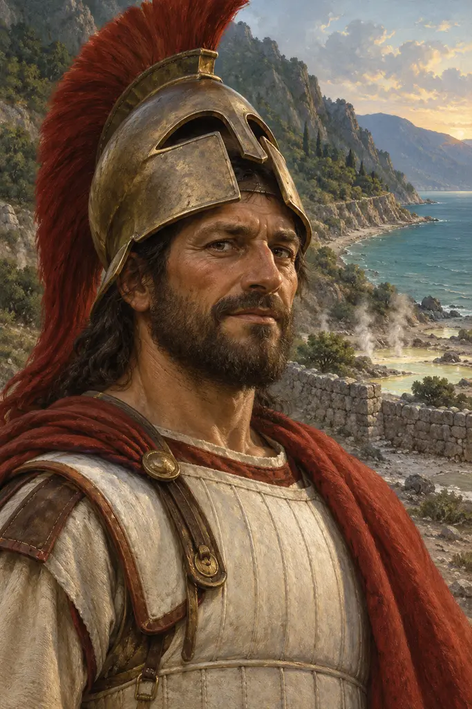
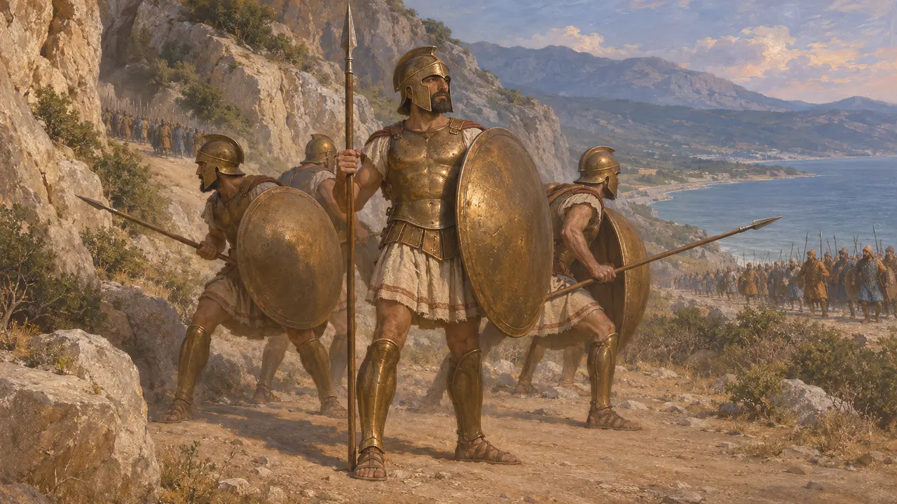
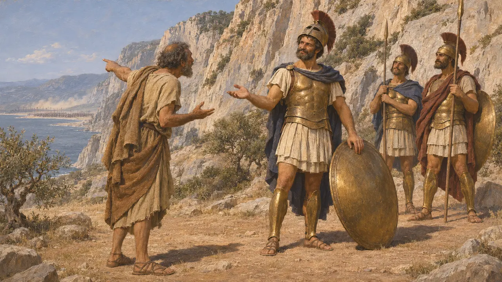
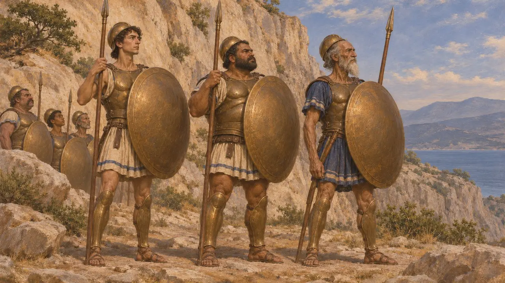
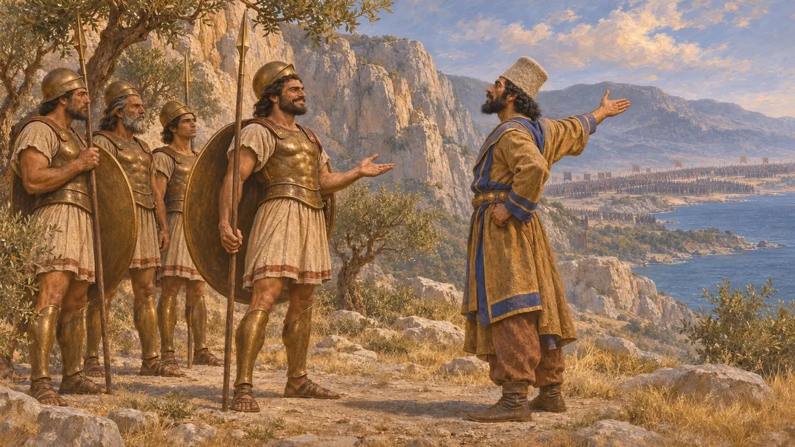
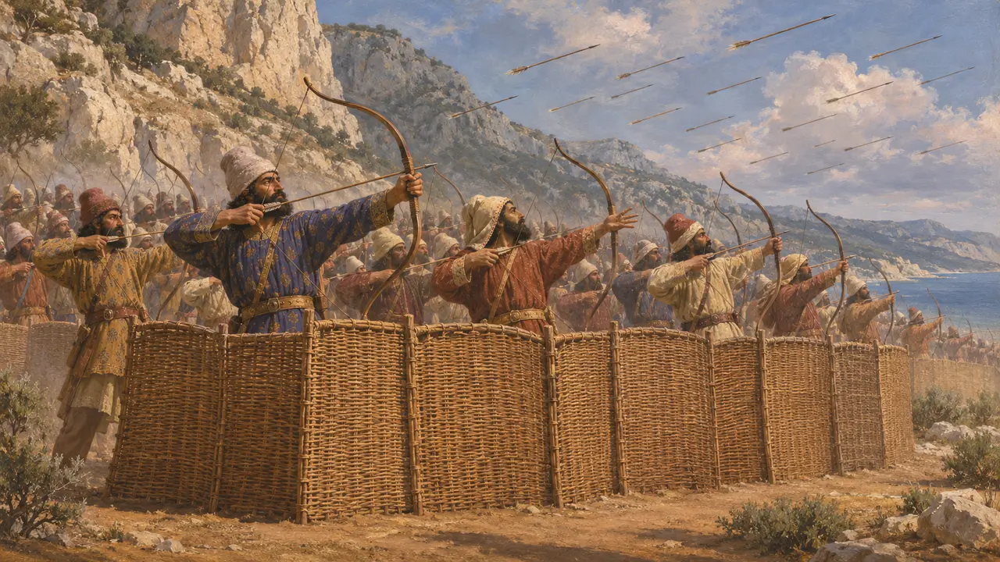

Dieneces
Spartan soldier who fell at Thermopylae in 480 BCE
Dieneces was a Spartan citizen soldier who fought with Leonidas at Thermopylae in 480 and probably died in the last stand. Herodotus reports that he was said to be the bravest of all the Spartans and Thespians there, and preserves a dry remark about Persian arrows that made him remembered. Nothing else is known of his life, and his fame rests on that single passage.
In the game: The game mentions Dieneces in a chronicle note that follows Herodotus 7.226. It leaves out that Herodotus gives the story as hearsay and names a man of Trachis as the one who warned about the arrows.

The bravest of the Spartans
Ancient accountHerodotus says that of all the Lacedaemonians and Thespians who held the pass, the one said to have been best was Dieneces, a Spartiate, meaning a full Spartan citizen. He gives no father, age or rank for him, and does not describe how he died. Like almost all of the Spartans at Thermopylae, he probably fell on the last day, when the Greeks were surrounded after the Persians came round by the mountain path.
Herodotus 7.226

Fighting in the shade
Ancient accountHerodotus passes on a story told about Dieneces. Before the fighting began, a man of Trachis warned that the Persian archers were so many that their arrows would hide the sun. Dieneces, unmoved, answered that this was good news, since the Greeks would then fight in the shade. Herodotus adds that he was said to have left other sayings of this kind as memorials, though he records none of them.
Herodotus 7.226

Others honoured beside him
Ancient accountHerodotus names two more Spartans as outstanding, the brothers Alpheus and Maron, sons of Orsiphantus. Among the Thespians he names a man called Dithyrambus, son of Harmatides. The list shows that Greek tradition after the battle ranked individual courage, and that the Thespians who stayed to the end were also remembered.
Herodotus 7.227

A Spartan saying, retold
Later legendThe shade remark belongs to a type of short, dry answer that Greeks thought typically Spartan, and it travelled. Plutarch's collection of Spartan sayings gives a version of it to Leonidas. Cicero tells it in Latin of an unnamed Spartan answering a boasting Persian. These later retellings show the line becoming a free-floating moral example of contempt for death rather than a remembered fact about one man.
Plutarch, Sayings of Spartans; Cicero, Tusculan Disputations, book 1

The arrows and the other side
DisputedNo Persian source mentions Thermopylae, Dieneces or the Spartan stand, and the royal inscriptions of Xerxes are silent on the Greek campaign. Greek writers describe Persian infantry shooting in volleys from behind wicker shields, so the image of massed arrows fits their picture of Persian fighting. But Herodotus puts Xerxes' host at over five million with its followers, a figure historians judge greatly exaggerated, so the scale of the archery belongs to the story.
P. Cartledge, Thermopylae, 2006; J. F. Lazenby, The Defence of Greece 490-479 BC, 1993
Sources
- Herodotus 7.226-227
- Plutarch, Sayings of Spartans
- Cicero, Tusculan Disputations, book 1
- P. Cartledge, Thermopylae: The Battle That Changed the World, 2006
- J. F. Lazenby, The Defence of Greece 490-479 BC, 1993
- P. Briant, From Cyrus to Alexander, 2002